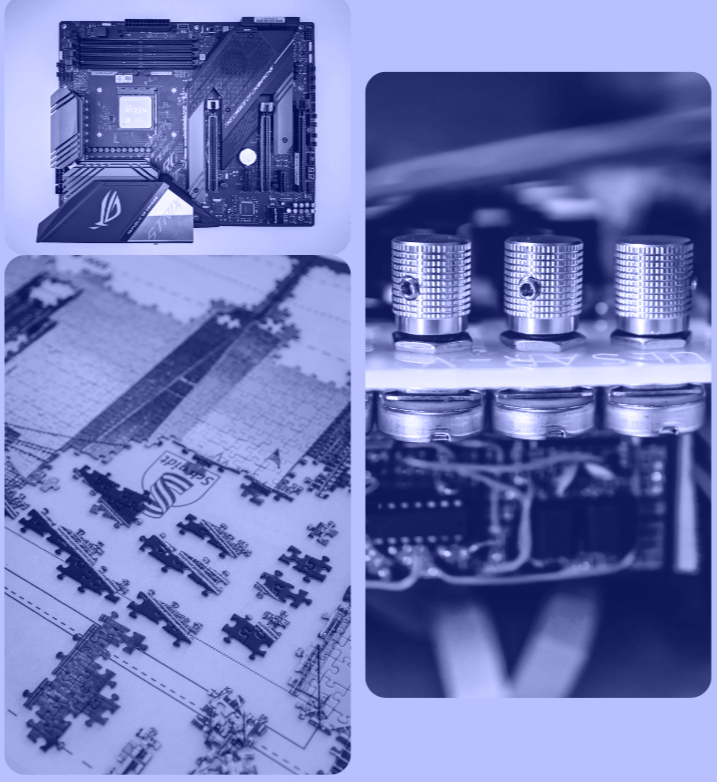

Types of Gates
The different types of logic gates and symbols with truth tables are discussed below.

AND Gate
The AND gate is a digital logic gate with ‘n’ i/ps one o/p, which performs logical conjunction based on the combinations of its inputs. The output of this gate is true only when all the inputs are true. When one or more inputs of the AND gate’s i/ps are false, then only the output of the AND gate is false. The symbol and truth table of an AND gate with two inputs is shown below.

AND Gate and its Truth Table
OR Gate
The OR gate is a digital logic gate with ‘n’ i/ps and one o/p, that performs logical conjunction based on the combinations of its inputs. The output of the OR gate is true only when one or more inputs are true. If all the i/ps of the gate are false, then only the output of the OR gate is false. The symbol and truth table of an OR gate with two inputs is shown below.

OR Gate and its Truth Table
NOT Gate
The NOT gate is a digital logic gate with one input and one output that operates an inverter operation of the input. The output of the NOT gate is the reverse of the input. When the input of the NOT gate is true then the output will be false and vice versa. The symbol and truth table of a NOT gate with one input is shown below. By using this gate, we can implement NOR and NAND gates

NOT Gate and its Truth Table
NAND Gate
The NAND gate is a digital logic gate with ‘n’ i/ps and one o/p, that performs the operation of the AND gate followed by the operation of the NOT gate.NAND gate is designed by combining the AND and NOT gates. If the input of the NAND gate high, then the output of the gate will be low.The symbol and truth table of the NAND gate with two inputs is shown below.

NAND Gate and its Truth Table
NOR Gate
The NAND gate is a digital logic gate with ‘n’ i/ps and one o/p, that performs the operation of the AND gate followed by the operation of the NOT gate.NAND gate is designed by combining the AND and NOT gates. If the input of the NAND gate high, then the output of the gate will be low.The symbol and truth table of the NAND gate with two inputs is shown below.

NOR Gate and its Truth Table
Exclusive-OR Gate
The Exclusive-OR gate is a digital logic gate with two inputs and one output. The short form of this gate is Ex-OR. It performs based on the operation of the OR gate. . If any one of the inputs of this gate is high, then the output of the EX-OR gate will be high. The symbol and truth table of the EX-OR are shown below.

Exclusive-OR Gate and its Truth Table
Exclusive-NOR Gate
The Exclusive-NOR gate is a digital logic gate with two inputs and one output. The short form of this gate is Ex-NOR. It performs based on the operation of the NOR gate. When both the inputs of this gate are high, then the output of the EX-NOR gate will be high. But, if any one of the inputs is high (but not both), then the output will be low. The symbol and truth table of the EX-NOR are shown below.

Exclusive-NOR Gate and its Truth Table
The applications of logic gates are mainly determined based upon their truth table, i.e., their mode of operations. The basic logic gates are used in many circuits like a push-button lock, light-activated burglar alarm, safety thermostat, an automatic watering system, etc.

Exciting Topics
Dive into a variety of logic gate topics, from basic gate functions to complex digital circuits and processor architecture. Stay up-to-date with the ever growing content and embrace the limitless possibilities of electronics.
For More Info!